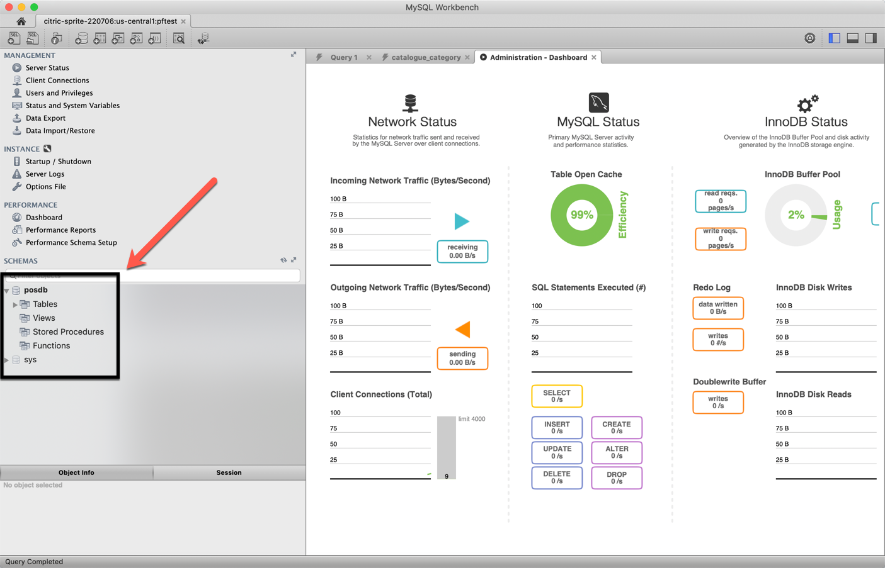

Sql Database Access & How-to’s¶
To control / import a load of bulk data this is the way to do it.
There are two ways to access Powerfix POS DATABASE
1. Login to Google Console Platform¶
To connect directly to Google Console Platform by going to https://console.cloud.google.com/home/dashboard?project=citric-sprite-220706

2. Install MySQL Locally¶
Install MySQL directly by going to https://dev.mysql.com/downloads/workbench/?os=src
Once installed on the main front page - Do the following
- Click the + icon to create a new connection
- Input your instance connection as described
- Test Connection
- Hit Ok.
Inside the dashboard you will have the following
